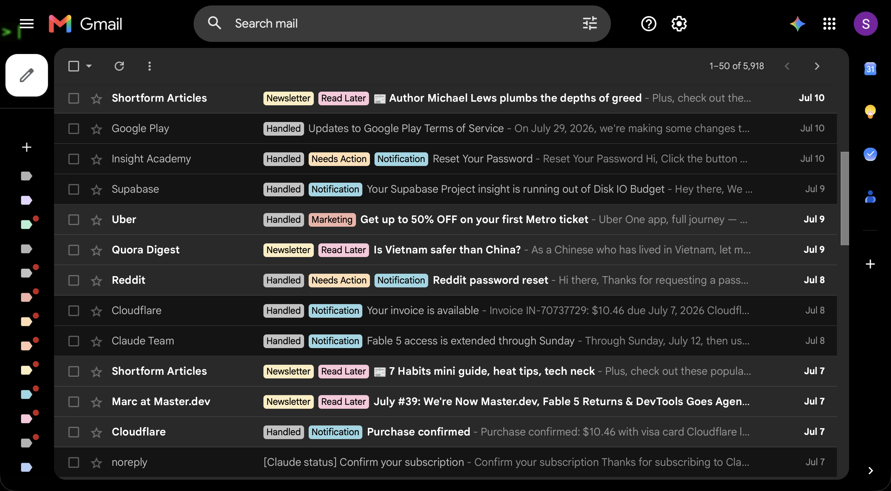

Own end to end
FlowDesk
Next.js, TypeScript, PostgreSQL, Gmail APIs, model routing, audit history, provider writeback, deployment, and the product surface users operate.
Application: Full Stack Engineer
A working application for the team building the agent I already run my life and products on.
No keyword theater. Each requirement points to a shipped system, a production constraint, or a gap I can name honestly.
Next.js, TypeScript, PostgreSQL, Gmail APIs, model routing, audit history, provider writeback, deployment, and the product surface users operate.
I use Hermes daily for browser actions, email, memory, scheduled work, and multi-step execution. I also integrate it into guarded business workflows.
Python ML pipelines, Node.js APIs, React and Next.js interfaces, PostgreSQL, AWS, Azure, and production debugging across the stack.
Auth, APIs, sync, AI behavior, database state, browser automation, deployment, and UI are all part of the same product when the user needs an outcome.

A Gmail-native AI email operator with human-approved drafting, durable user overrides, provider writeback, audit logs, cost-aware model use, and production-grade sync behavior.
VIEW THE REPOSITORYA private tutoring platform using Hermes for guarded WhatsApp operations, approvals, scheduling, and admin-visible transcripts.
Read the implementationThree product problems pulled from running agents on real work, not from brainstorming features.
Give every consequential run a compact ledger: intent, action, verification, and a durable proof handle. A successful tool call is not a successful task.
Preserve the exact tab and failed control, move to the next item, then hand the user one clean queue instead of retrying the same broken interaction.
Make tool state, model decisions, human handoffs, and verification evidence inspectable without exposing hidden reasoning or drowning the user in logs.
I will own the path from vague request to verified outcome.